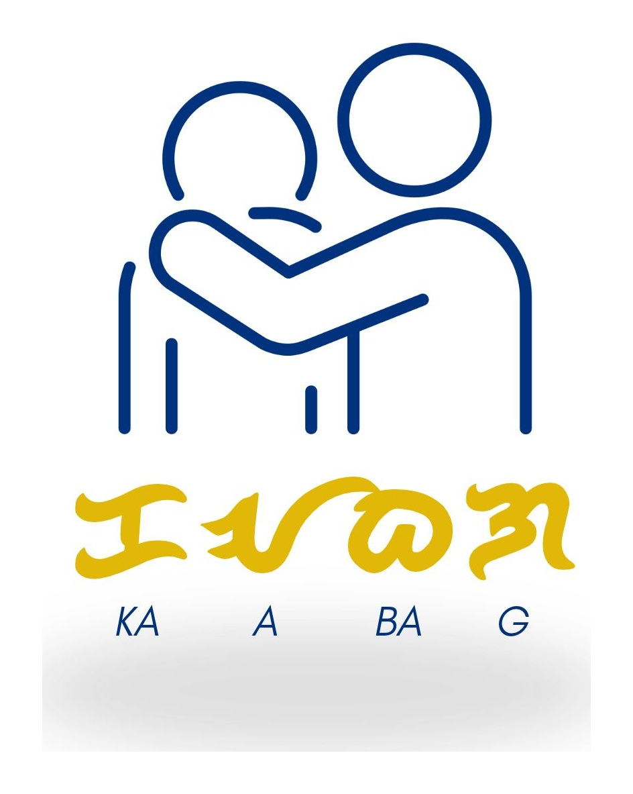

Clinic Location
The USTP School Clinic is located inside the USTP campus, near Building 25.
Location details to be confirmed
KAABAGHIMSOG TA! • USTPYOUR GUIDE TO THE USTP SCHOOL CLINIC
Find helpful information about the USTP School Clinic, including its location, visiting guidelines, announcements, and appointment options. HIMSOG TA! makes clinic information easier for Trailblazers to find.
The USTP School Clinic is located inside the USTP campus, near Building 25.
Location details to be confirmedProposed information: 8:00 AM–5:00 PM.
To be verified with the clinicNo official clinic phone number, email address, or social media contact has been provided for this website at this time.
No contact details available yetPlease take note: Clinic location and operating hours are based on the information provided for this project and must be confirmed with USTP School Clinic personnel before publication.
BEFORE YOUR VISIT
These are general reminders for students. Please follow the instructions of the clinic personnel and confirm any specific requirements directly at the clinic.
Keep your USTP student identification ready in case clinic personnel need to verify your student information.
Clearly share the reason for your visit so the clinic personnel can guide you appropriately.
Observe the clinic's procedures, respect other students, and follow the instructions provided by clinic personnel.
These reminders are suggested website content, not verified official clinic rules. The clinic may have additional requirements.
GETTING CARE
Based on the information provided for this project, students may visit the clinic as walk-ins or request an appointment through the proposed HIMSOG TA! platform.
Appointment requests should be treated as requests until the clinic confirms the schedule. For urgent concerns, do not wait for an online appointment response—seek immediate assistance from appropriate campus or emergency personnel.
Appointment Information →STAY INFORMED
Updates can be posted here to help Trailblazers stay informed about clinic activities and service changes.
Announcements about temporary changes to clinic hours or availability.
Information about health awareness campaigns, wellness seminars, and related activities.
Important notices about service availability or temporary interruptions.
There are no official announcements available to display yet. This section is a placeholder for verified clinic updates.
MEET THE TEAM
Clinic personnel profiles may be added here once their names, positions, and photos are provided and approved for public display.
Personnel details not yet providedQUICK ANSWERS
It is inside the USTP campus, near Building 25. Please confirm the exact entrance or room location before your visit.
The provided project information lists 8:00 AM–5:00 PM, but these hours still need to be verified with the clinic.
Yes. Based on the information provided for this project, both walk-ins and appointments are allowed.
No official contact details have been provided for this website at this time.
This website does not currently list a verified clinic emergency contact. For an urgent or life-threatening situation, seek immediate help from campus emergency personnel or local emergency services.
EMERGENCY INFORMATION
Do not rely on this website or wait for an appointment request if someone needs urgent medical attention. Seek immediate assistance from campus emergency personnel or local emergency services.
Official USTP emergency contact numbers have not yet been provided for this page.